Desde 2009 em Ouro Branco
Desde 2009, a ACAFRO leva capoeira, percussão, música e dança a crianças e jovens de Ouro Branco. Oficinas gratuitas para menores de idade, em quatro núcleos da cidade.
A ACAFRO nasceu em janeiro de 2009, criada por um grupo de artistas locais liderado por Wanderson Wagner de Campos, o Mestre Sapo. É uma instituição sem fins lucrativos, dedicada a promover a cultura negra e o movimento artístico em Ouro Branco e região.
Atuamos em capoeira, percussão, pandeiro, música, dança, teatro e circo. As oficinas são gratuitas para alunos menores de idade, e o trabalho é voltado a crianças e jovens em situação de vulnerabilidade social.
Em 2025, a ACAFRO recebeu a Medalha Dona Jandira em sua primeira edição, concedida pela Câmara Municipal de Ouro Branco.
Cultura afro-brasileira como caminho de formação — não só como prática esportiva ou artística.
Todas as oficinas são gratuitas para alunos menores de idade.
Nossa atividade principal, com cerca de 150 alunos. Turmas infantis e adultas, com graduação por corda.
Atabaque, agogô e demais instrumentos da roda e da cultura afro-brasileira.
Oficina dedicada ao instrumento, do acompanhamento de roda ao repertório popular.
Danças de matriz africana e afro-brasileira.
Segmentos em que a associação também atua ao longo do ano.
Iniciação musical ligada às práticas da capoeira e da percussão.
As aulas acontecem de segunda a sábado, distribuídas pelos núcleos da cidade. Horários ilustrativos — a confirmar com a associação.
Seg a sáb · manhã e noite
Capoeira, percussão, música
Ter e qui · tarde
Capoeira infantil e adulto
Seg e qua · tarde
Capoeira, pandeiro
Qua e sex · tarde
Capoeira infantil
Sáb · manhã
Capoeira, dança
Registros das aulas, rodas e apresentações. No sistema, essas fotos vêm direto do acervo alimentado pelos professores.
← arraste para ver mais fotos →
Eventos ilustrativos — no sistema, esta agenda é alimentada pela área administrativa.
Praça Central · 15h · Aberto ao público, com participação de todos os núcleos
Quadra do São Francisco · 9h às 17h · Mestres convidados
Programação em todos os núcleos · Apresentações, oficinas e roda de conversa
Matrículas abertas o ano todo
Fale com a gente pelo WhatsApp. As oficinas são gratuitas para menores de idade e as matrículas ficam abertas o ano todo.
Chamar no WhatsApp